Vanderbilt · The AI-enabled Education Series · facilitator guide · print edition
Ideas, Faster, the facilitator guide

Run of show
| Page | Time |
|---|---|
| Run this course | Before class |
| Welcome | Full 2 min · Core 2 |
| The Chancellor’s charge | Full 3 min · Core: under 1 |
| The evidence | Full 4 min · Core 2 |
| The method | Full 9 min · Core 5 |
| Example: blank page | Full 8 min · Core 7 |
| Example: the mystery | Full 3 min · Core: skip |
| Example: vague goal | Full 4 min · Core: skip |
| Guardrails | Full 4 min · Core 3 |
| Practice now | Full 8 min · Core 4 |
| Knowledge check | Full 3 min · Core: skip |
| Recap | Full 3 min · Core 2 |
| Appendix | As needed · Core: skip |
| Total | Full 51 min · Core 25 min |
A week before · Learn it as a learner first
- Run both editions end to end, this one and the learner classroom edition, doing every exercise, including typing a real brief into the practice builder.
- Write your own CRIT brief for a real problem you’re stuck on. In the session you’ll say you’ve done it, so have done it.
- Book a room where tables can talk and confirm guest wifi works for personal devices; the flood rounds need both.
- Decide your path now: Full (48) or Core (25). The rail carries both timings on every page.
- Rehearse the live flood out loud. You will run the fall-event prompt on the projector and pull 20 ideas onto the screen with the room’s constraints, so run it alone first and practice reading a flood back fast.
The day before · Test the room end to end
- Test the projector with this facilitator link and confirm the script rail is readable from where you’ll stand.
- Scan the welcome QR from the back of the room. It must land on the learner classroom edition, not this page.
- Log in to ChatGPT EDU or Amplify and leave it ready; the live flood on the blank-page example depends on it.
- Print a few one-page takeaways (the Print button on the practice page) for anyone without a device.
- Re-read your tough-questions bank and say the answers out loud: “isn’t this just letting the machine think for me,” “what if the ideas are generic,” “can I brainstorm about people problems,” “do I have to credit the AI.”
30 minutes before · Set the stage
- Welcome page up (the next page, with the QR) as people arrive, so scanning starts before you do.
- Close every other tab and silence notifications on the machine that’s projecting.
- Test the arrow keys, the copy buttons, and one run of the event prompt in your logged-in tool.
- Write PARKING LOT on the whiteboard. Policy questions you can’t answer go there with a name, and you follow up by email.
Materials · What has to be in the room
- Projector with this facilitator edition open.
- Facilitator laptop with an approved AI tool logged in (ChatGPT EDU or Amplify) for the live flood.
- Learner devices, joining through the welcome QR into the classroom edition.
- A few printed takeaways for people without a device.
- Whiteboard or flip chart for the parking lot, the backup URL, and the table flood tallies.
Pre-work invite (copy and paste)
Subject: Ideas, Faster · [day], [time], [room] Hi everyone, On [day] at [time] in [room] we’re running Ideas, Faster, a short session from The AI-enabled Education Series on getting unstuck: brainstorming, problem-solving, and clearer thinking. You’ll leave with a three-step method and three prompts you can use the next morning. Two things before you come: 1. Bring a phone or laptop. You’ll follow along on your own screen. 2. Sign in to ChatGPT EDU or Amplify once with your Vanderbilt account, so login isn’t the first thing you do in the room. Bring one real problem you’re stuck on this week. Nothing you type in the session is collected or sent anywhere. See you there, [Your name]
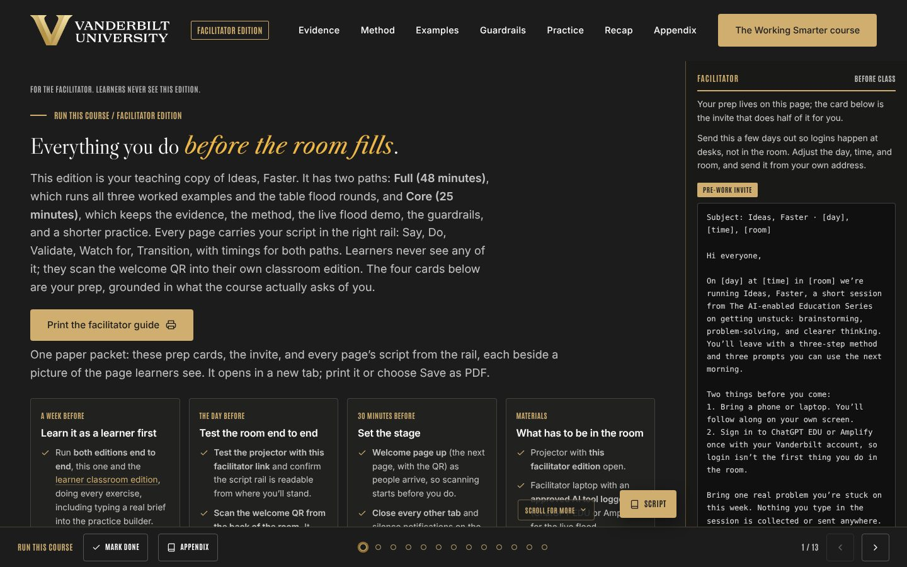
Run this course Before class
Your prep lives on this page; the card below is the invite that does half of it for you.
Send this a few days out so logins happen at desks, not in the room. Adjust the day, time, and room, and send it from your own address. The invite text is on the first page of the facilitator edition and in the printed packet below.
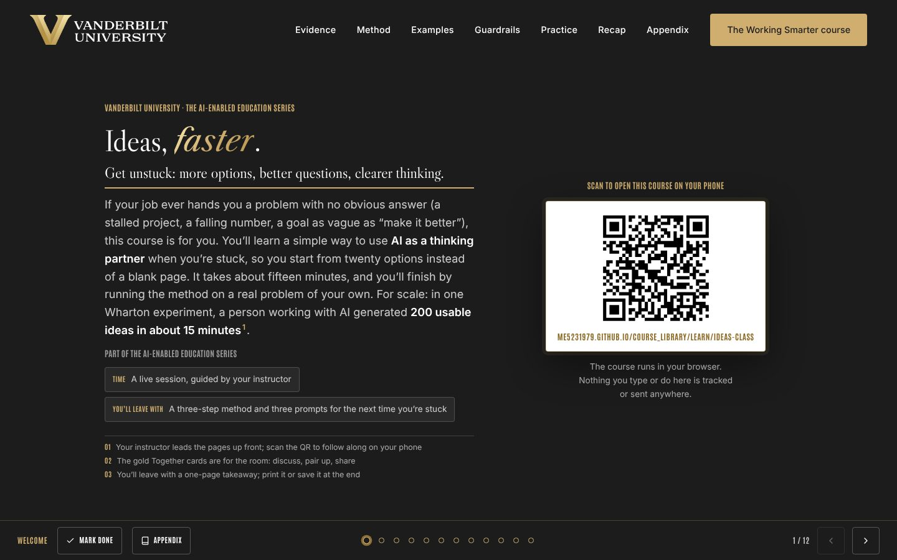
Welcome Full 2 min · Core 2
Get every device into the learner edition and set the deal for the session.
Say
“This is Ideas, Faster, part of The AI-enabled Education Series. In the next forty-five minutes you’ll learn a three-step way to get unstuck with AI: it floods you with options, and you keep the judgment about what is worth doing. Scan the QR and the course opens on your phone. Everything I do up here, you can do down there.”
Do
- Have this page projected as people arrive; the QR does its work before you start talking.
- Give the room two minutes to scan and open the course; the whiteboard URL is the backup.
- Point out the bottom-bar arrows so people can follow along page by page.
- Say plainly that nothing they type is stored or sent anywhere.
Validate: 80%+ of the room has the course open on a phone or laptop before you turn the page.
Watch for: Guest wifi stalls and half the room can’t load it. Point at the URL on the whiteboard, ask people to share a neighbor’s screen, and keep moving; don’t troubleshoot wifi in front of thirty people.
Transition: “Before I ask you to change how you think through problems, one page on why the university is asking.”
Core path: Same page, same two minutes. The clock savings come later.
The Chancellor’s charge Full 3 min · Core: under 1
Frame the course as part of the Chancellor’s vision before the evidence, so the method reads as institutional strategy, not a productivity tip.
Say
“One page of why before the how. Chancellor Diermeier’s vision is one sentence: Vanderbilt will define the great university of the 21st Century and be it. Nobody grows while they’re stuck, and a university betting on bold ideas needs people who can get unstuck on demand. This course is your corner of that vision: twenty options on the table before the meeting ends.”
Do
- Read the vision sentence from the page slowly; it can carry the moment on its own.
- Walk the three focus cards left to right, one line each, and land on the At-your-desk line in each.
- Point at the flywheel card and say plainly that bold bets start life as one option in somebody’s flood.
- Keep the page under three minutes; it frames the course, it is not the course.
Validate: Heads nod at the At-your-desk lines; the room hears its own stuck problems in the vision, not a strategy briefing.
Watch for: Eyes glazing over at the word “vision.” Jump straight to the At-your-desk line on the first card and let the concrete example pull the page back to earth.
Transition: “That’s the why from the Chancellor. Here’s the evidence the method is worth your time.”
Core path: Under a minute: read the vision sentence, gesture at the three focus cards, and turn the page.
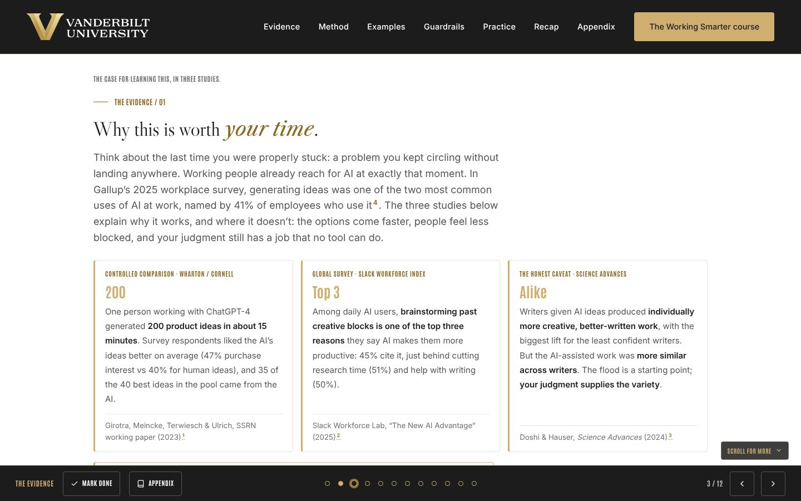
The evidence Full 4 min · Core 2
Ground the method in the research so it lands as evidence, not enthusiasm.
Say
“Think about the last time you were properly stuck. In one Wharton experiment, a person working with AI generated two hundred ideas in about fifteen minutes, and most of the best ideas in the pool came from the AI. Slack’s workforce research puts brainstorming past creative blocks in the top three reasons daily AI users feel more productive. And the honest caveat, from Science Advances: AI ideas run alike, so the variety stays your job.”
Do
- Project the three evidence cards and give each one sentence, not a lecture.
- Run the gold Together card: one sentence each on what people are stuck on right now, no solving allowed.
- Take two or three answers out loud; the stories do the persuading.
- Mention that every number is cited in full on the Appendix page, one tap away in the bottom bar.
Validate: At least two people name a real stuck problem out loud.
Watch for: Someone challenges the numbers. Don’t defend from memory: jump to the Appendix, show the citation, and offer to talk after. The course survives skepticism; improvised statistics don’t.
Transition: “Here’s the method those studies point to. It fits on one page.”
Core path: 25-min core: skip the share-out. State the 200-ideas-in-15-minutes finding in one sentence and turn the page.
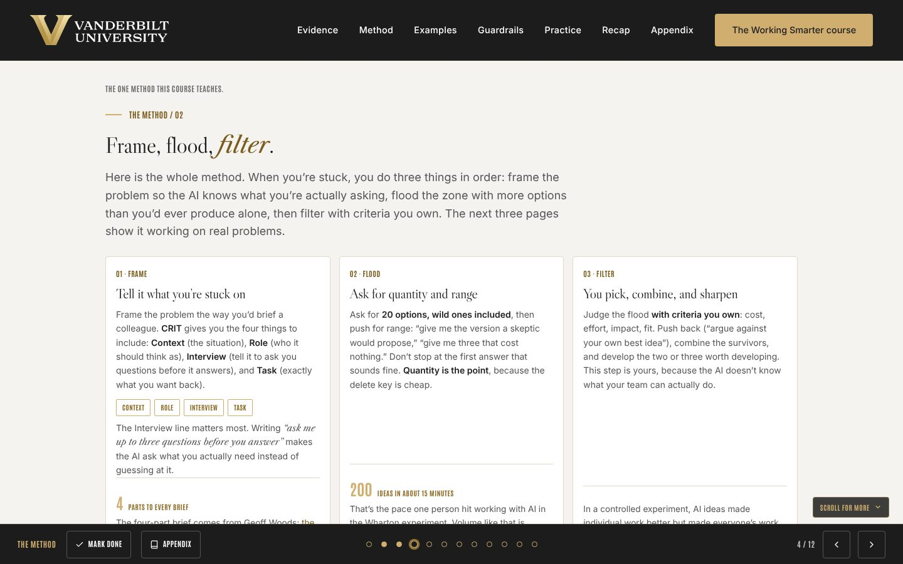
The method Full 9 min · Core 5
Teach Frame, Flood, Filter and the CRIT brief. This is the one page they must remember.
Say
“The whole method is three steps in order. Frame the problem with CRIT: Context, Role, Interview, Task. Flood: ask for twenty options, wild ones included, and push for range. Filter: you pick, combine, and sharpen with criteria you own. The Interview line matters most: ‘ask me up to three questions before you answer’ makes it ask about what it doesn’t know instead of guessing.”
Do
- Walk the three cards left to right, spending most of your time on the Frame card.
- Read the four CRIT chips out loud and say in one line what each one buys you.
- Run the Together card: pairs explain Frame, Flood, Filter back to each other in under a minute.
- Point at the gold rule strip and read it word for word: the AI supplies the options, and you supply the judgment.
- Run the filter step: give the room two minutes to tag two Develop and one Only-I-would-think-of-this, then compare with the exemplar on the projector and ask who picked something the exemplar missed.
Validate: Cold-call one pair afterward: they can name the three steps and say what the Interview line does.
Watch for: People hearing Flood as “take the first answer.” Say now that twenty options is the ask, and that the live demo on the next page will show why quantity changes what you end up picking.
Transition: “Enough theory. Let’s flood a real problem, live, and see what twenty options actually looks like.”
Core path: 25-min core: keep everything but the pair activity and the filter step. Name the steps yourself, then cold-call one person.
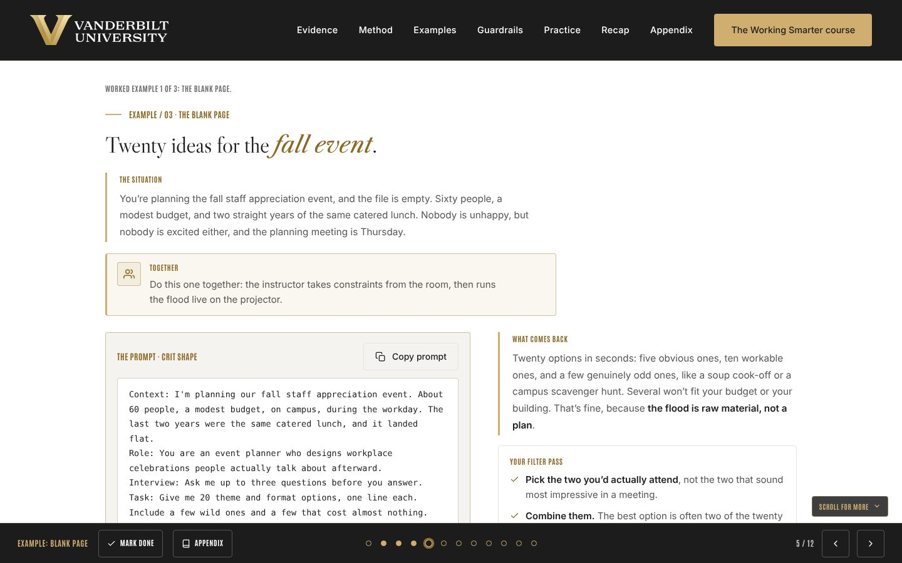
Example: blank page Full 8 min · Core 7
The live demo: the room watches a real flood come back and helps filter it.
Say
“Here’s the situation: the fall staff appreciation event. Sixty people, a modest budget, and two straight years of the same catered lunch. Watch what happens when we ask for twenty options instead of one good idea. I’m running this exact prompt right now, with your constraints, and whatever comes back, we filter together.”
Do
- Read the situation from the page, then take two or three real constraints from the room (budget, building, month) and edit them into the Context line before you run it.
- Run the prompt live in your logged-in tool and answer its interview questions out loud, taking the answers from the room.
- Read the twenty options back fast, and ask the room to call out the two worth keeping and the wildest one worth taming.
- Map what just happened onto the filter pass: pick two, combine them, sanity-check the budget and the date.
Validate: The room calls out keepers without you pulling them out one by one.
Watch for: The flood comes back bland or repetitive. Don’t apologize and don’t quietly re-run it. Push it live (“give me five wilder ones and three that cost nothing”) so the room sees how to ask for range.
Transition: “That was a blank page. Now a problem where nobody even knows what’s wrong.”
Core path: 25-min core: keep the live run; it’s the heart of the session. Take one constraint from the room instead of three.
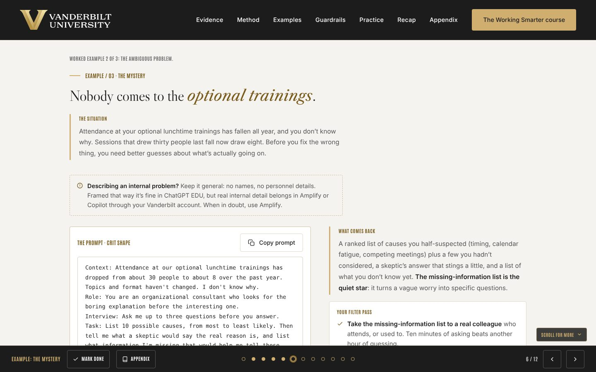
Example: the mystery Full 3 min · Core: skip
Show the ambiguous-problem move: causes, the skeptic, and the missing-information list.
Say
“Attendance at optional trainings fell from thirty to eight and nobody knows why. Notice the prompt doesn’t ask for a fix. It asks for ten possible causes, what a skeptic would say, and what information is missing. The missing-information list is the quiet star: it turns a vague worry into questions you can actually ask.”
Do
- Give the situation in one breath and project the prompt; don’t run this one live.
- Point at the amber keep-it-general note and say why: no names, no personnel details, and real internal detail goes to Amplify.
- Walk the three-line filter pass and land on “take the missing-information list to a real colleague” as the step no tool can do.
- Tell the room this prompt is on their printed takeaway, so nobody needs to copy anything now.
Validate: Ask “what do you do with the missing-information list?” and hear “ask a real person” back.
Watch for: The temptation to run a second live demo. Two live runs this early drains the clock; narrate this one from the page and save the live energy for practice.
Transition: “A mystery at least has a cause. The last example has no shape at all: a goal so vague it isn’t even a problem yet.”
Core path: 25-min core: skip this page. As you leave the live flood, say the takeaway carries two more worked prompts, a mystery and a vague goal.
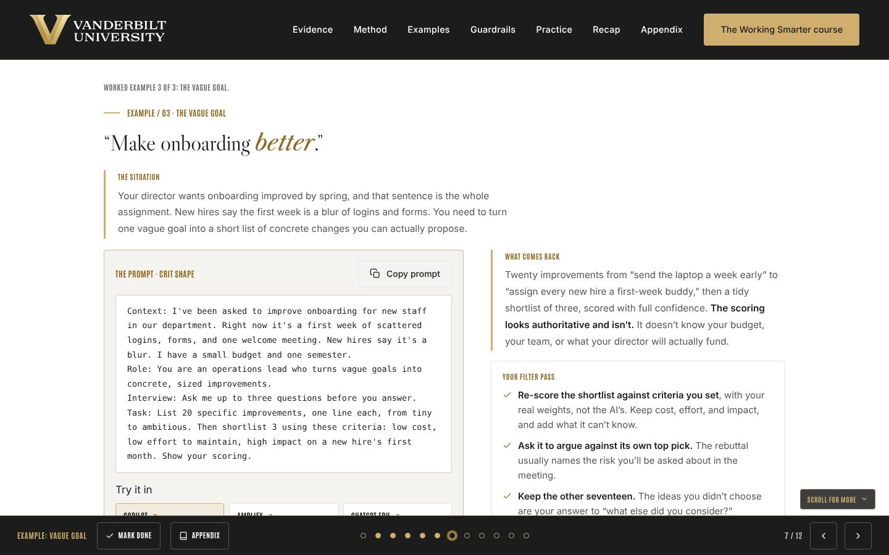
Example: vague goal Full 4 min · Core: skip
Turn a vague goal into twenty concrete options and a shortlist, and show whose criteria win.
Say
““Make onboarding better.” That sentence is the whole assignment. The prompt asks for twenty concrete improvements, then a shortlist of three scored on cost, effort, and impact. The scoring comes back looking authoritative, and it isn’t: the AI doesn’t know your budget, your team, or your politics. You re-score with your own weights.”
Do
- Project the prompt and point at the Task line: the criteria are named in it, and the learner names them, not the tool.
- Show the Try-it row: Copilot recommended because onboarding docs live in Office, Amplify equally right for internal detail.
- Read the What-comes-back note and land on “the scoring looks authoritative and isn’t.”
- Read the last filter line, “keep the other seventeen,” and say why: it answers “what else did you consider?”
Validate: Ask “whose criteria decide the shortlist?” and hear “mine” back from the room.
Watch for: The room disappearing into their own onboarding gripes. One story is useful; park the rest on the whiteboard and keep the page about the method.
Transition: “Three examples, one pattern. Before you flood anything of your own, four rules that keep it safe.”
Core path: 25-min core: skip this page. The guardrails page carries the safe-data rule on its own.
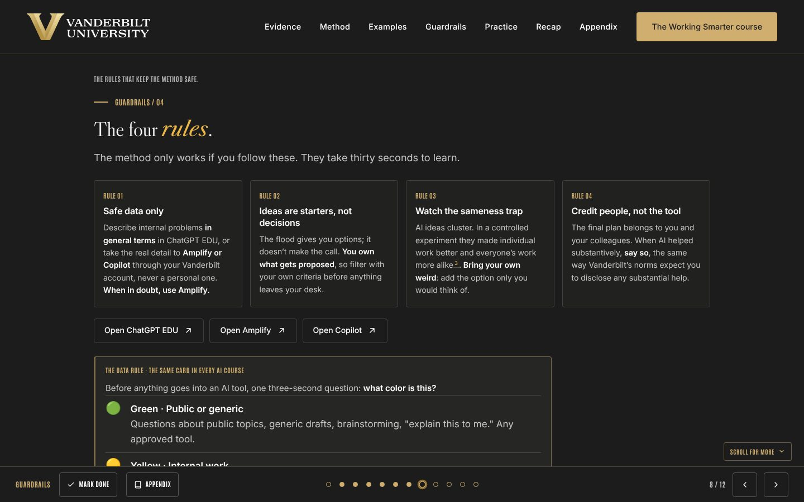
Guardrails Full 4 min · Core 3
Make the four rules stick, especially safe data, before any table floods a real problem.
Say
“Four rules, thirty seconds each. Safe data only: describe internal problems in general terms, or take the real detail to Amplify or Copilot through your Vanderbilt account, and when in doubt, Amplify. Ideas are starters, not decisions: you own what gets proposed. Watch the sameness trap: AI ideas cluster, so bring your own weird. And credit people, not the tool: when AI helped substantively, say so.”
Do
- Project the four cards and read each headline; add one sentence each, not a paragraph.
- On rule one, ask the room to frame a people problem two ways: general enough to brainstorm anywhere, and too specific to paste at all.
- Take the questions this page always raises, “isn’t this just letting the machine think for me” and “what if the ideas are generic,” with the answers you rehearsed in prep.
- Show the three tool buttons and name the default this room should use.
Validate: Ask “you want ideas for a conflict between two named colleagues; where does that go?” and hear “general terms, or Amplify, or a human.”
Watch for: A policy question you can’t answer, like a specific data class. Don’t guess at policy. Put it on the parking lot with a name next to it and follow up by email.
Transition: “Those are the rules. Now the part that makes this course stick: your table floods something real.”
Core path: 25-min core: cut the room examples. Read the four rules and run the one named-colleagues check question.
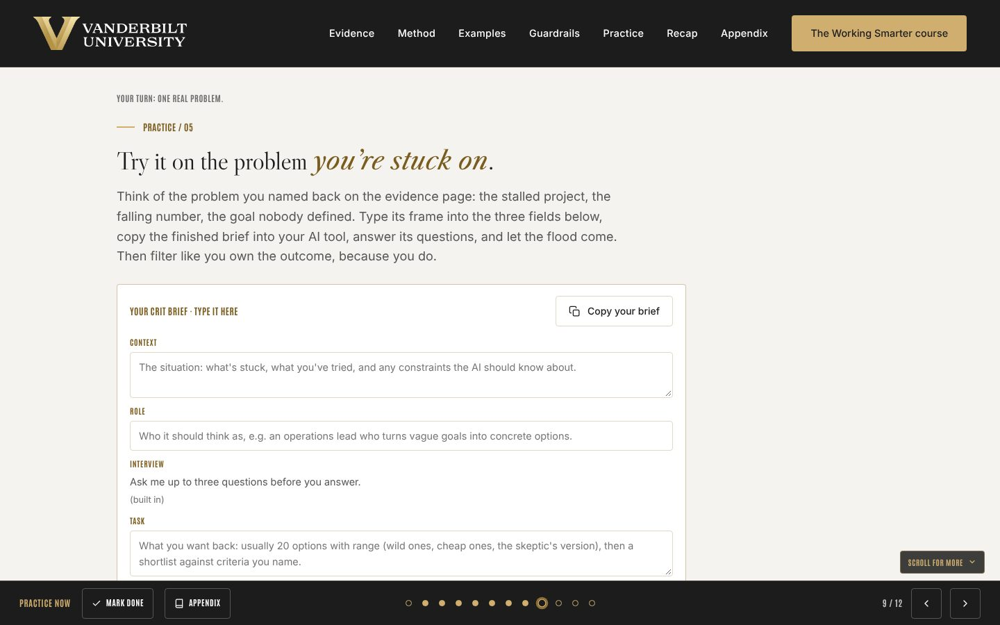
Practice now Full 8 min · Core 4
Every table leaves having flooded one real problem and voted a shortlist. This page is the course.
Say
“Think of the problem you named at the start. Now, tables: pick one owner’s real stuck problem, flood it together, twenty options in five minutes, wild ones welcome. Then vote on a shortlist of three and hand it back to the owner. The table floods; the owner filters.”
Do
- Put the brief builder on the projector and walk the three fields once, fast.
- Set the tables, name the problem owner at each, and start the five-minute flood.
- Circulate; nudge stalled tables past ten by asking for the skeptic’s version and three options that cost nothing.
- Call the vote, then have two owners read their shortlist of three to the room.
Validate: Every table hits at least fifteen options before the vote; no table stalls at four polite ones.
Watch for: The “our problem is too sensitive to share” table. Have them pick the owner’s second problem, or hand them a real fallback: flood ideas for the next staff meeting agenda.
Transition: “You’ve each seen a real flood and a real vote. Three quick questions to prove the method stuck.”
Core path: 25-min core: solo instead of tables. Everyone floods their own problem for three minutes, and one volunteer reads their top three.
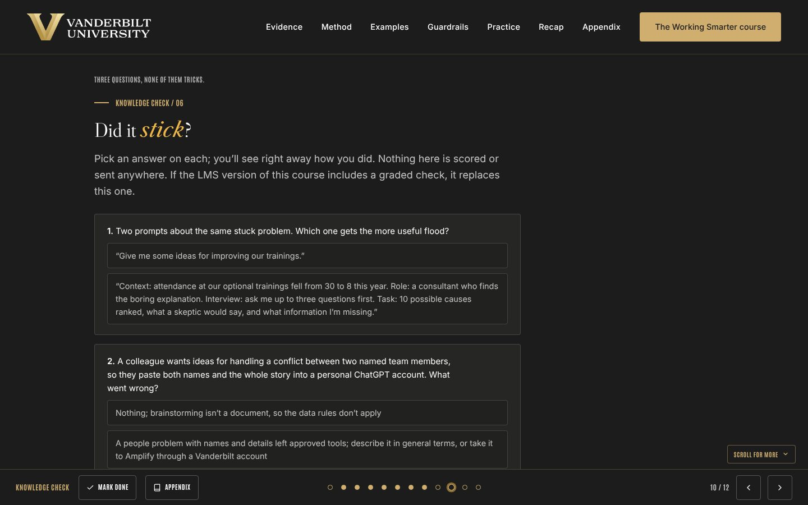
Knowledge check Full 3 min · Core: skip
A room vote that surfaces the three failure modes without feeling like a quiz.
Say
“Three questions, no grades, and nothing leaves the room. Look up here for each one, vote by show of hands, and then somebody tells me why.”
Do
- Project question one and read both prompts aloud; vote by hands.
- Tap the winning answer on screen so the room sees the explanation.
- Repeat for the named-colleagues question and the twenty-same-ideas question.
- Where a vote splits, give the two sides thirty seconds to argue before you reveal.
Validate: Near-unanimous hands on question two, the safe-data one. If that one splits, reteach rule one now.
Watch for: People answering on their phones before the vote. Ask them to keep eyes up during each vote and tap their own answers after; the argument is the point, not the tap.
Transition: “Three for three. Last page: what you’re leaving with, and what you do tomorrow morning.”
Core path: 25-min core: skip the vote. Ask question three only, out loud, on the way to the recap: what do you do when all twenty ideas feel the same?
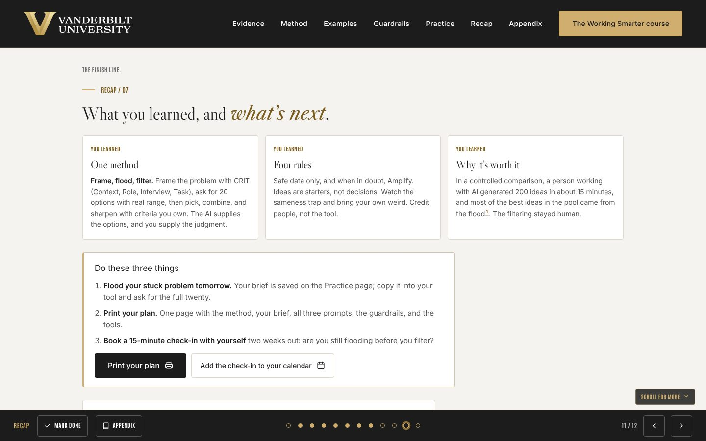
Recap Full 3 min · Core 2
Land the three next actions: tomorrow’s flood, the printed plan, the two-week check-in.
Say
“You learned one method, four rules, and the evidence behind both. Three things now. Flood your stuck problem tomorrow; your brief is already saved from practice. Take the one-page plan. And book the fifteen-minute check-in two weeks out: are you still flooding before you filter?”
Do
- Walk the three You-learned cards in one sentence each.
- Point at the print button; hand your printed takeaways to anyone without a device.
- Have everyone tap the calendar button and add the two-week check-in now, not later.
- Name the Oracle Learning shelf (brainstorming, creativity, problem solving, critical thinking) for people who want more, and end on time.
Validate: You see phones come out for the calendar file, not just nods.
Watch for: Running past the end. If you’re at time, the recap is three sentences and printouts by the door; never trade the ending for the shelf.
Transition: “The appendix has every source, and the course stays online at the same link. Thanks for your time; now go get unstuck on purpose.”
Core path: 25-min core: same three actions, one sentence each. The calendar tap is the one to keep.
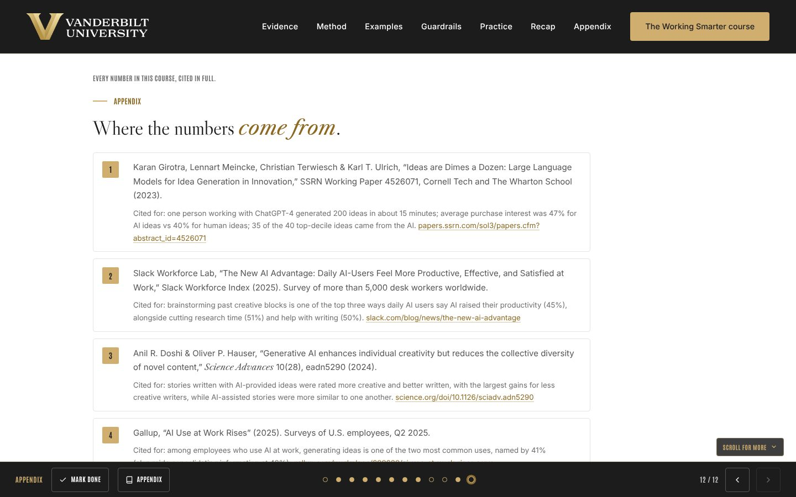
Appendix As needed · Core: skip
Reference, not a page you teach. Open it the moment a number gets challenged.
Say
“Every number in the course, cited in full. It stays online at this link, so nobody needs to copy anything down.”
Do
- Show it for ten seconds so the room knows it exists.
- Return to it live whenever someone questions a statistic; the Appendix button in the bottom bar jumps here from any page.
- Point out the CRIT credit to Geoff Woods and the Working Smarter course link for anyone who wants the full framework.
Validate: You can put the Wharton citation on screen within five seconds of being asked.
Watch for: A methodology debate in the last minutes. One citation on screen, then “happy to dig in after”; protect the ending.
Transition: “That’s the whole course. I’ll stay a few minutes for anything on the parking lot.”
Core path: 25-min core: skip; leave it on screen while people file out if you like.
Generated from the facilitator edition's page scripts and the learner edition on screen. The on-screen facilitator edition lives at ./ alongside this guide.